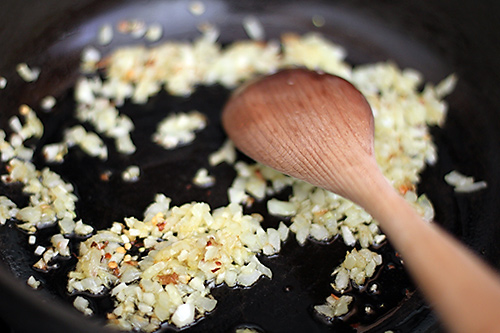
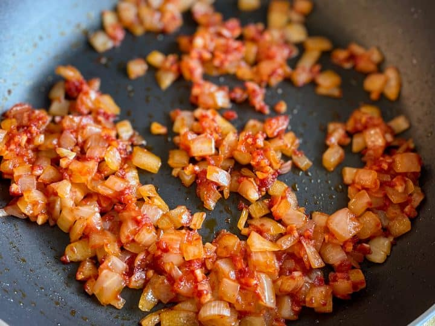
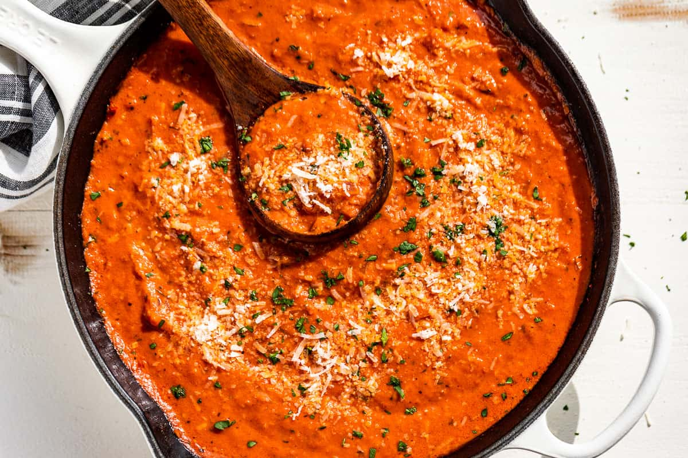

Step 1: Prep & Saute

Begin by heating olive oil over medium low heat. Add the minced onion and garlic with a pinch of kosher salt and cook until softened, about 5 minutes.
Step 2: Build the Flavor

Stir in the tomato paste and crushed red pepper flakes. Cook until the paste turns a dark red, about 3 minutes. Then pour in the vodka and let it sizzle for about 1 minute to cook off alcohol.
Step 3: Cream & Combine

Pour in the heavy cream and stir until smooth; then turn off the heat. Meanwhile, bring salted water to a boil in a separate pot.
Step 4: Boil Pasta & Combine

Cook the pasta just until about 1 minute shy of al dente. Save about 1 cup of pasta water before draining. Then return sauce to medium heat, stir in reserved water and grated Parmesan, taste and season with salt. Add cooked pasta and a tablespoon of cold butter, stirring vigorously for 1 minute to emulsify.
Step 5: Garnish & Serve

Serve immediately, topping each plate with more grated Parmesan Reggiano and minced Italian parsley. Enjoy this rich and creamy comfort dish.